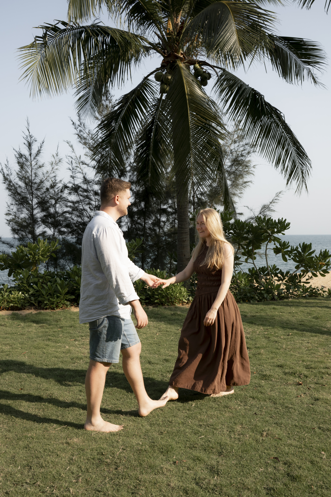
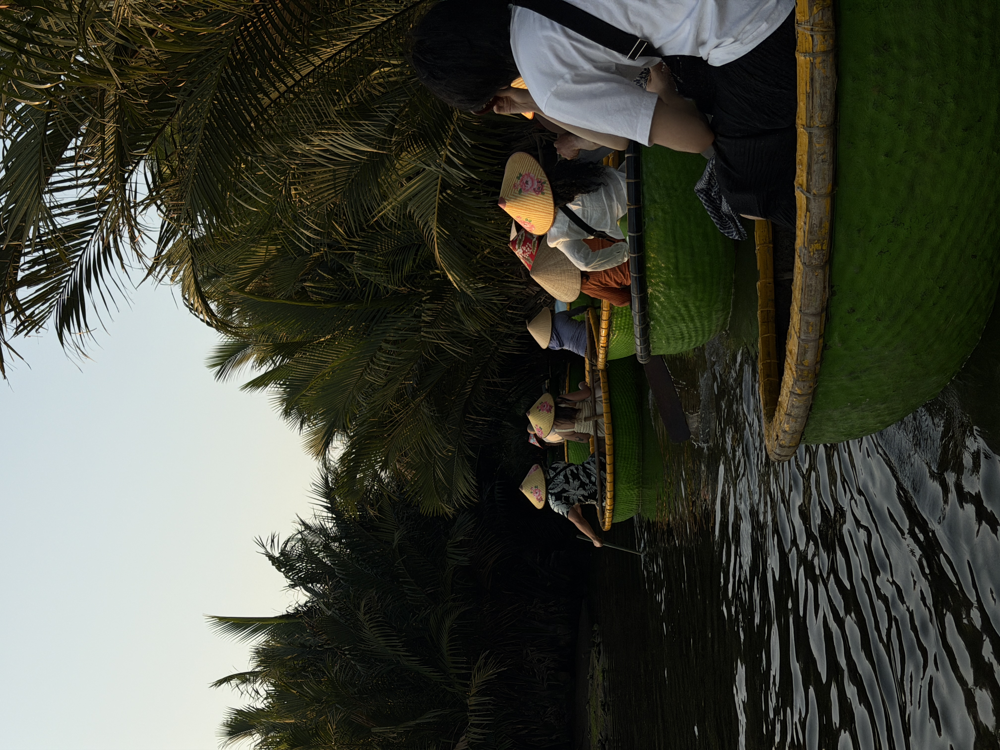
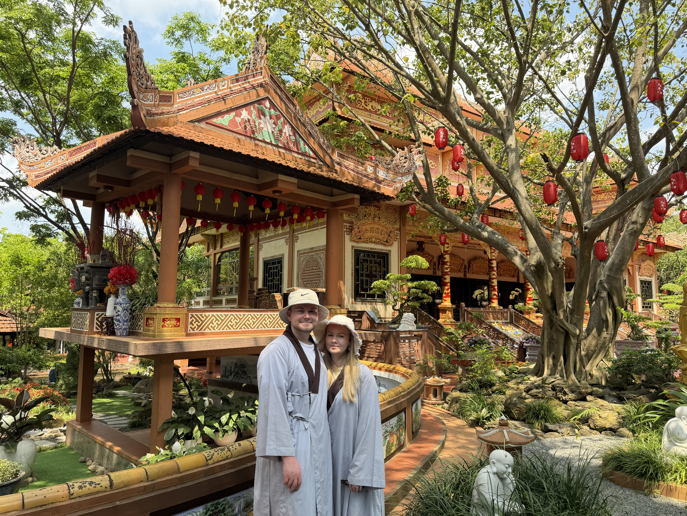

Von den Bergen in Innsbruck über unsere erste Asienreise bis zu unserer Hochzeit in Kopenhagen:
Hier halten wir unsere Erlebnisse von Dezember 2025 bis Juni 2026 fest.
Wir erzählen, was uns begeistert hat und was uns weniger gefallen hat.
Wir sind Uliana und Alexander, und zu uns gehört unser Hund Franny.
Im Dezember 2025 ging es für uns gemeinsam mit Franny nach Innsbruck.
Für mich, Uliana, war es die erste Reise seit langer Zeit und die erste mit unserem Hund.
2026 führte uns unsere erste Asienreise nach Seoul und Da Nang.
Ein besonderer Moment folgte im Juni: unsere Hochzeit in Kopenhagen.
Auf dieser Seite teilen wir persönliche Erinnerungen, Eindrücke und Bewertungen unserer Reisen.
Meine erste Reise seit langer Zeit führte uns nach Innsbruck – und zum ersten Mal
war unser Hund Franny dabei. Wunderschöne Berge, jeden Tag neue Eindrücke und richtig
leckeres Essen machten diese Reise für mich besonders. Nur der Schnee blieb hinter
unseren Erwartungen zurück: Er lag ausschließlich in den Bergen, und auch dort nicht viel.
Das hat uns gefallen
Endlich wieder eine Reise nach langer Zeit.
Unsere erste gemeinsame Reise mit Hund Franny.
Die wunderschöne Berglandschaft und jeden Tag neue Eindrücke.
Das leckere Essen.
Das hat uns nicht gefallen
Es gab sehr wenig Schnee, selbst in den Bergen.
Seoul, Südkorea
Reisezeitraum:
Unsere Bewertung: 5 von 5
Unsere erste Asienreise führte uns nach Seoul. Die Stadt war richtig spannend:
Es gab viel zu entdecken, gute Shoppingmöglichkeiten und interessantes Essen.
Wir hatten drei volle, erlebnisreiche Tage. Rückblickend wären wir gerne länger geblieben –
fünf Tage oder eine ganze Woche hätten uns mehr Zeit zum Erkunden gegeben.
Das hat uns gefallen
Eine coole Stadt mit vielen Möglichkeiten zum Entdecken.
Die guten Shoppingmöglichkeiten.
Das interessante Essen und die erlebnisreichen Tage.
Das hat uns nicht gefallen
Drei Tage waren für uns zu kurz; fünf Tage bis eine Woche wären besser gewesen.
Die Verständigung auf Englisch war bei unseren Begegnungen häufig schwierig.
Da Nang, Vietnam
Reisezeitraum:
Unsere Bewertung: 4,5 von 5
In Da Nang gab es unglaublich viel zu entdecken, und jeder Tag war anders.
Für mich war es das erste Mal in den Tropen. Besonders in Erinnerung geblieben sind
die schöne Natur und die Affen in freier Wildbahn – sogar Affenbabys haben wir gesehen.
Dazu kamen leckeres Essen, der beste Kaffee, den ich bisher probiert habe,
und eine tolle Massage. Vor Ort war vieles sehr günstig; die Hin- und Rückflüge waren
davon allerdings ausgenommen. Zum Schwimmen nutzten wir die Pools, weil uns das Meer
während unseres Aufenthalts zu kalt war.
Das hat uns gefallen
Viel zu entdecken und jeden Tag neue Erlebnisse.
Die günstigen Preise vor Ort.
Leckeres Essen und mein bisher bester Kaffee.
Die schöne Natur und frei lebende Affen mit ihren Babys.
Mein erster Aufenthalt in den Tropen und eine tolle Massage.
Das hat uns nicht gefallen
Es war sehr laut, und die Straßen waren nicht besonders sauber.
Das Meer war uns zum Schwimmen zu kalt.
Die starke Sonne machte häufiges Eincremen nötig.



Kopenhagen, Dänemark
Reisezeitraum:
Unsere Bewertung: 4 von 5
Kopenhagen ist für uns mit einer ganz besonderen Erinnerung verbunden:
Hier haben wir geheiratet. Die schöne Stadt, ein tolles Restaurant und unser schönes
Hotel machten die Reise besonders. Ich hatte außerdem schöne Outfits dabei,
über die ich mich sehr gefreut habe.
Während unseres Aufenthalts war es sehr heiß, und die Reise war teuer.
Insgesamt haben wir weniger unternommen als bei unseren anderen Reisen.
Durch unsere Hochzeit bleibt Kopenhagen trotzdem ein besonderer Ort für uns.
Das hat uns gefallen
Die schöne Stadt und unsere Hochzeit.
Das tolle Restaurant und das schöne Hotel.
Meine schönen Outfits für die Reise.
Das hat uns nicht gefallen
Die Reise war sehr teuer.
Während unseres Aufenthalts war es sehr heiß.
Abgesehen von der Hochzeit war die Reise weniger erlebnisreich.
Kontakt
Du möchtest dich mit mir über unsere Reisen austauschen?
Du findest mich auf Instagram: